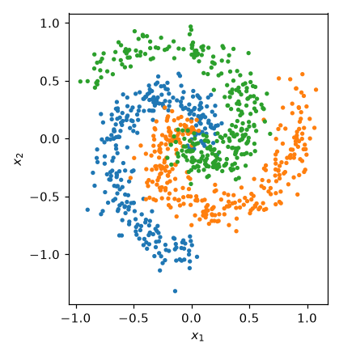

Lab 10 Exercise - Neural Network Fundamentals and Convolutions
Download lab10_code.py and put it in the same folder as your notebook (on Google Colab, upload it with the folder icon on the left). Then start your notebook with
from lab10_code import *It contains the code from the presentation that the TODOs build on (ShallowNet, the zigzag f1, train, evaluate, make_mlp, make_cnn, shift, shift_accuracy, …) and the spiral data for Part 2, with the usual imports (np, plt, torch, nn, F).
Learning goals
By the end of this lab you should be able to:
- Explain a shallow ReLU network as a sum of hinges, and why composing layers multiplies the number of linear pieces.
- Read and use a PyTorch training loop (cross-entropy, minibatches, optimizer steps), and diagnose a bad learning rate from the training loss.
- Interpret the last layer of a classifier as a logistic regression on features (an embedding) that the network learns.
- Explain why fully connected networks ignore where pixels are, and what this costs them on images.
- Explain how a convolutional layer works (weight sharing, channels, pooling), and count the parameters of a CNN.
- Use a validation set to detect overfitting, choose the number of epochs, and compare architectures.
- Make a CNN more robust to small shifts, through its architecture (depth and pooling) or with data augmentation.
| Part | Presentation section | TODOs | Learning goals |
|---|---|---|---|
| 1. Neural networks as functions | 1 | 1.1, 1.2 | 1 |
| 2. Classifiers learn their own features | 2 | 2.1, 2.2 | 2, 3 |
| 3. Training a CNN on MNIST | 4, 5 | 3.1, 3.2, 3.3 | 4, 5, 6, 7 |
Everything you have to do is in a red TODO box like this one. Text outside the boxes is background you need to understand the TODOs.
Each TODO says in words what to do, followed by functions that may be useful. Work in a new notebook that starts with from lab10_code import *, and put each TODO under a markdown heading with its number, for example ### TODO 1.2. The last TODO of each part asks questions; answer them in a markdown cell after the other TODOs of that part.
Setup
TODO 0.1. Install PyTorch and torchvision (see Setup in the presentation, or use Google Colab). Download lab10_code.py (see Code for this lab above) and check that from lab10_code import * runs in a new notebook; the first time, it downloads MNIST (about 60 MB). Part 3 trains several networks on MNIST, which takes a few minutes on a laptop CPU.
1 Neural networks as functions
A shallow network \(f(x) = \phi_0 + \sum_{d=1}^D \phi_d \, \mathrm{ReLU}(\theta_{d0} + \theta_{d1} x)\) is a sum of hinges. Here you set its parameters yourself, and then see how composition multiplies the number of linear pieces.
TODO 1.1. Without any training, choose the parameters of a ShallowNet by hand so that it computes \(f(x) = |x|\), using as few hidden units as you can. Do the same for the “tent” \(f(x) = \max(0, 1 - |x|)\). Plot both networks to check them.
May be useful: the comments in ShallowNet say which parameter holds what. To overwrite a parameter, use .copy_(...) inside with torch.no_grad():.
TODO 1.2. Compose the zigzag \(f_1\) from the presentation (f1) with itself two and three times, plot the results on \([0, 1]\), and count their linear pieces.
TODO 1.3. Answer in a markdown cell:
- Explain your parameters in TODO 1.1 in terms of joints and slopes. Why can’t you use fewer hidden units?
- Compare the number of linear pieces of your compositions in TODO 1.2 with the most that a shallow network with the same total number of hidden units can have. What does this suggest about depth?
2 Classifiers learn their own features
In the presentation, a network learned a feature that separates two circles. Here you use a harder data set: three noisy spiral arms, one per class, that overlap near the center. Logistic regression on \((x_1, x_2)\) gets only about half of the points right.

lab10_code.py contains the data (X_spiral and y_spiral, and X_spiral_t and y_spiral_t as tensors) and the spiral network SpiralNet, which is the circle network of the presentation with three classes. train_spiral_net trains it like train_circle_net, with any optimizer and embedding dimension, and plot_decision_regions plots the data on top of the classes that a network predicts.
TODO 2.1. Train the spiral network with plain stochastic gradient descent instead of Adam, for learning rates spanning several orders of magnitude (include one that is too small and one that is too large). Compare their training curves and final training accuracies.
May be useful: the optimizer_class argument of train_spiral_net.
TODO 2.2. Does the spiral network still work with a 1-dimensional embedding? Train one, compare it with the 2-dimensional embedding, and make a plot that shows what its embedding has learned.
May be useful: the embed_dim argument of train_spiral_net, net.embedding, and plot_decision_regions.
TODO 2.3. Answer in a markdown cell:
- What goes wrong when the learning rate is too small, and when it is too large? How does a good learning rate for SGD compare with the one the presentation used for Adam?
- Is a 1-dimensional embedding enough for the spirals? Explain what the last layer can and cannot do with a single number.
3 Training a CNN on MNIST
Early stopping uses the validation loss to choose the number of epochs, and more generally, the validation set is how we choose between models. Here you make a network overfit on purpose, compare deep and wide CNNs, and make the best one more robust to shifts with data augmentation.
TODO 3.1. Make the fully connected network overfit: train a new one on only the first 1,000 images of train_set for 50 epochs. Use the validation set to find the epoch at which you should have stopped, and compare the validation loss and accuracy there and at epoch 50. Plot what you need to support your answer.
May be useful: torch.utils.data.Subset, torch.utils.data.DataLoader, and the history returned by train.
TODO 3.2. Is it better to make a CNN deeper or wider? make_cnn(channels) builds a CNN with one convolution + ReLU + max pooling block per entry of channels, which is the number of channels of that block: make_cnn((16, 32, 64)) is the CNN of the presentation, and make_cnn((64,)) has a single, wide block. Compare 4 to 6 architectures that differ in depth (1 to 4 blocks) and width. To keep this quick and fair, train every network the same way: on the first 10,000 images of train_set, for 5 epochs (about a minute or less per network on a laptop CPU). For each network, report its number of parameters, its validation accuracy and its accuracy on validation images shifted by 3 pixels, plot its validation accuracy against the epoch, and choose the best architecture.
May be useful: torch.utils.data.Subset, print_shapes, train(..., verbose=False), and the loader argument of shift_accuracy.
TODO 3.3. Use data augmentation to make your best architecture from TODO 3.2 more robust to shifts: train a new network with that architecture and the same budget, on training images shifted at random by up to 3 pixels in each direction. Compare its accuracy on shifted test images with that of the network from TODO 3.2.
May be useful: shift, shift_accuracy, and the transform argument of train (which also applies it to the validation images).
TODO 3.4. Answer in a markdown cell:
- In TODO 3.1, do the validation loss and the validation accuracy agree on when to stop? Explain any difference. How do the curves compare with those of the networks trained on 50,000 images in the presentation?
- In TODO 3.2, did more parameters mean a better network? Did depth or width help more, for accuracy and for robustness to shifts, and why?
- Are your networks in TODO 3.2 done learning after 5 epochs? Could more epochs change your choice of architecture? Which data did you use to choose it, and why that data?
- In TODO 3.3, for which shifts does augmentation help, and why does it work? Compare the robustness to shifts that comes from augmentation with the robustness that comes from depth in TODO 3.2.
Submission
Upload your notebook, with every TODO in Parts 1-3 done and every question answered, on Gradescope by Tuesday at 9 PM. The grading will be based on completion.
LLM usage policy
You may use auto-completion for filling out small code snippets (affect around 2-3 lines of code) and documenting your code. Small code snippets are things like “add a label for the axis of the plot”, “change the color of the points”, “add an argument for the number of interactions in the fit”. These are small code operations which do not involve significant planning nor automated changes to the logic of the code without your supervision. All edits must be verified and accepted manually, and you should make sure you know what the code is doing.
Things that are explicitly not allowed are major edits to the code (affect > 10 lines) and ones which involve automating huge parts of the development of the logic structure of your analysis. For example, “write a function to extract features from the data”, or “run a test set validation loop and report the best model”.
Delegate to language models only things which you know exactly how you would have done it yourself or would be comfortable googling/asking for help from someone who already took the course/knows how to code, but who cannot do the learning for you.